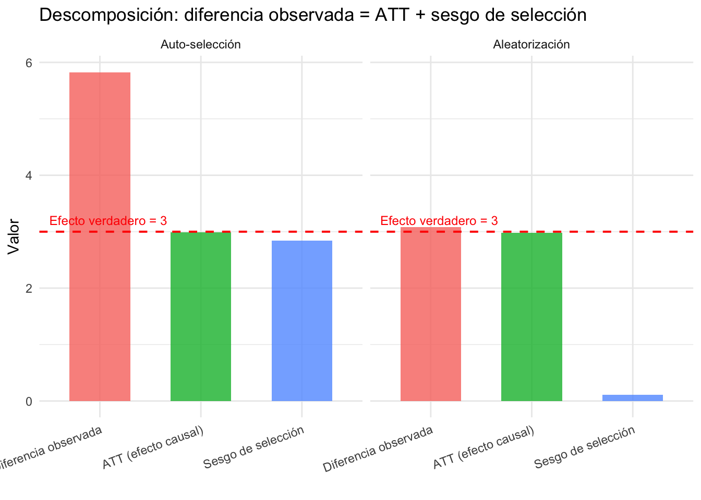
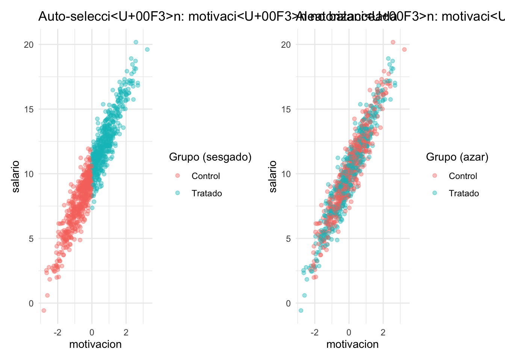
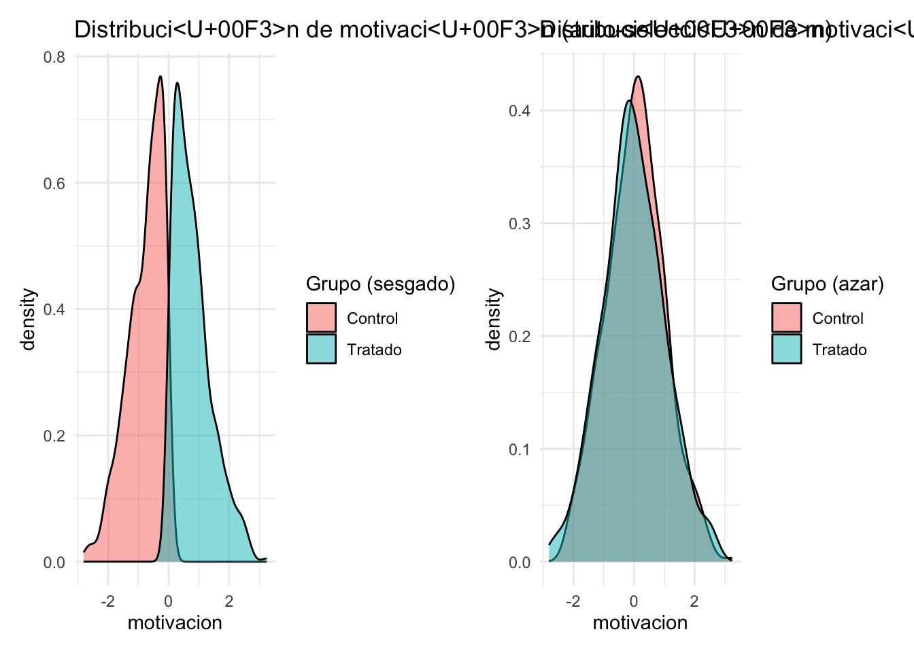
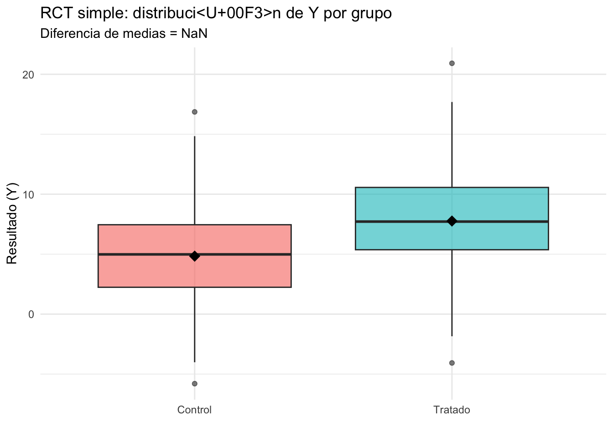
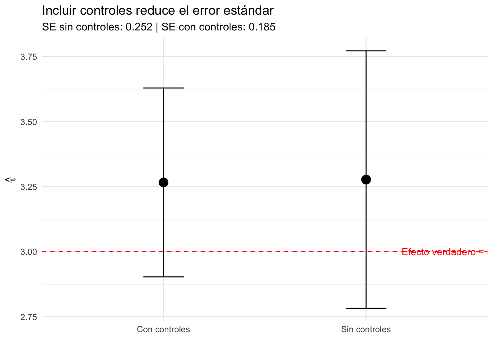
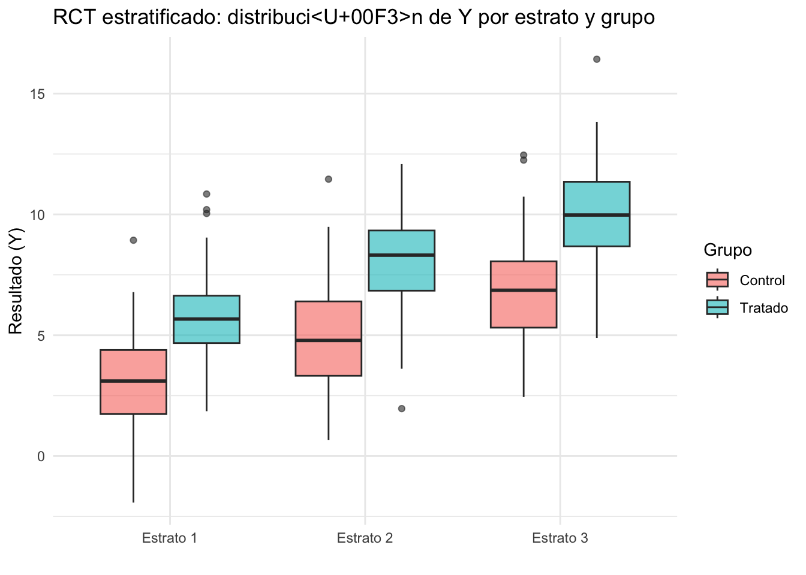
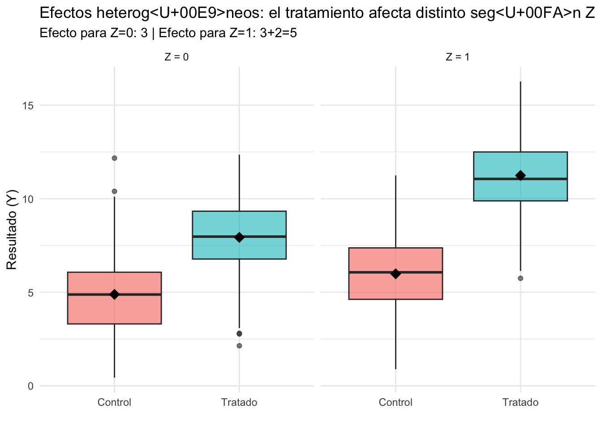

Capitulo 5 Experimentos Aleatorizados
Objetivo del capítulo
- Entender por qué la aleatorización elimina el sesgo de selección
- Formalizar la notación de resultados potenciales (ATE, CATE)
- Traducir resultados potenciales a regresiones lineales en cuatro escenarios de diseño
- Comprender cuándo y por qué incluir controles y estratos
Notación mínima para todo el módulo
Antes de avanzar, fijemos la notación que usaremos en todo el módulo de experimentos:
- \(Y_i\): resultado (outcome).
- \(D_i \in \{0,1\}\): asignación aleatoria al tratamiento (1 = tratado, 0 = control).
- \(X_i\): controles pre-tratamiento (baseline).
- \(S_i\): estrato/bloque (vector de dummies de estratificación).
Resultados potenciales:
- \(Y_i(D=1)\): resultado si \(i\) recibe tratamiento.
- \(Y_i(D=0)\): resultado si \(i\) está en control.
El problema fundamental de la inferencia causal es que para cada individuo solo observamos uno de los dos:
\[ Y_i = D_i \cdot Y_i(D=1) + (1-D_i) \cdot Y_i(D=0) \]
Efectos:
ATE (Average Treatment Effect): efecto promedio en toda la población. \[ ATE = \mathbb{E}[Y_i(D=1)-Y_i(D=0)] \]
ATT (Average Treatment Effect on the Treated): efecto promedio entre quienes reciben tratamiento. \[ ATT = \mathbb{E}[Y_i(D=1)-Y_i(D=0) \mid D_i=1] \]
ATU (Average Treatment Effect on the Untreated): efecto promedio entre quienes no reciben tratamiento. \[ ATU = \mathbb{E}[Y_i(D=1)-Y_i(D=0) \mid D_i=0] \]
CATE (efecto promedio condicional): \[ CATE(x) = \mathbb{E}[Y_i(D=1)-Y_i(D=0) \mid X_i=x] \]
Nota: en general \(ATE \neq ATT \neq ATU\). Por ejemplo, si un programa de capacitación laboral beneficia más a quienes lo eligen voluntariamente (porque están más motivados), entonces \(ATT > ATU\). Sin embargo, en un RCT con asignación aleatoria, la independencia \(D_i \perp (Y_i(D=1), Y_i(D=0))\) garantiza que:
\[ ATE = ATT = ATU \]
porque los grupos de tratamiento y control son, en promedio, idénticos en todo (observable y no observable).
De la motivación a los resultados potenciales
Veamos un ejemplo concreto. Supongamos que el tratamiento es un programa de capacitación y el outcome es el salario:
- \(Y_i(D=1)\): salario de \(i\) si recibe capacitación.
- \(Y_i(D=0)\): salario de \(i\) si no recibe capacitación.
Lo que observamos es la diferencia de medias entre tratados y controles:
\[ \underbrace{\mathbb{E}[Y_i \mid D_i=1] - \mathbb{E}[Y_i \mid D_i=0]}_{\text{diferencia observada}} \]
Podemos descomponer esta diferencia sumando y restando \(\mathbb{E}[Y_i(D=0) \mid D_i=1]\):
\[ \mathbb{E}[Y_i(D=1) \mid D_i=1] - \mathbb{E}[Y_i(D=0) \mid D_i=0] \] \[ = \underbrace{\mathbb{E}[Y_i(D=1) \mid D_i=1] - \mathbb{E}[Y_i(D=0) \mid D_i=1]}_{ATT} + \underbrace{\mathbb{E}[Y_i(D=0) \mid D_i=1] - \mathbb{E}[Y_i(D=0) \mid D_i=0]}_{\text{sesgo de selección}} \]
Interpretación del sesgo de selección:
El término \(\mathbb{E}[Y_i(D=0) \mid D_i=1] - \mathbb{E}[Y_i(D=0) \mid D_i=0]\) compara el salario sin capacitación entre quienes eligen capacitarse y quienes no. En nuestro ejemplo:
- Las personas más motivadas eligen capacitarse (\(D_i=1\)).
- Pero la motivación también aumenta el salario, incluso sin capacitación.
- Por lo tanto \(\mathbb{E}[Y_i(D=0) \mid D_i=1] > \mathbb{E}[Y_i(D=0) \mid D_i=0]\): los tratados habrían ganado más de todas formas.
- Esto genera un sesgo positivo: atribuimos a la capacitación algo que en realidad es motivación.
¿Qué hace la aleatorización?
Al asignar \(D_i\) al azar, garantizamos que los grupos sean comparables antes del tratamiento:
\[ D_i \perp (Y_i(D=1), Y_i(D=0)) \implies \mathbb{E}[Y_i(D=0) \mid D_i=1] = \mathbb{E}[Y_i(D=0) \mid D_i=0] \]
El sesgo de selección se hace cero, y la diferencia observada identifica directamente el efecto causal:
\[ \mathbb{E}[Y_i \mid D_i=1] - \mathbb{E}[Y_i \mid D_i=0] = ATT = ATE \]

¿En regresión lineal cómo se ve esto?
Lo que acabamos de ver con resultados potenciales (la descomposición ATT + sesgo de selección) tiene un equivalente directo en el lenguaje de regresión: el sesgo por variable omitida. Veamos cómo se conectan.
Tenemos el siguiente modelo de regresión lineal:
\[ Y = \alpha + \tau D + \varepsilon \]
Donde:
- \(Y\) es el resultado (por ejemplo, salario),
- \(D\) es una variable binaria de tratamiento,
- \(\varepsilon\) incluye motivación, que no observamos.
Supongamos que la verdadera relación es:
\[ Y = \alpha + \tau D + \gamma M + u \]
Donde:
- \(M\) es motivación (no observable),
- \(u\) es un nuevo error sin correlación con \(D\),
- Pero no incluimos \(M\) en la estimación → queda absorbido en \(\varepsilon = \gamma M + u\)
El modelo estimado es:
\[ Y = \alpha + \tau D + \varepsilon \quad \text{con} \quad \varepsilon = \gamma M + u \]
Recordemos que el estimador de mínimos cuadrados ordinarios es:
\[ \hat{\beta} = (X'X)^{-1} X'Y \]
Con \(X = [\mathbf{1}, D]\), tenemos:
\[ \hat{\beta} = \begin{bmatrix} \hat{\alpha} \\ \hat{\tau} \end{bmatrix} = \left( \begin{bmatrix} 1 & D_1 \\ \vdots & \vdots \\ 1 & D_n \\ \end{bmatrix}' \begin{bmatrix} 1 & D_1 \\ \vdots & \vdots \\ 1 & D_n \\ \end{bmatrix} \right)^{-1} \begin{bmatrix} 1 & D_1 \\ \vdots & \vdots \\ 1 & D_n \\ \end{bmatrix}' Y \]
Queremos analizar el sesgo en \(\hat{\tau}\). Sustituyendo \(Y = \alpha + \tau D + \gamma M + u\)
Entonces:
\[ \hat{\tau} = \tau + \gamma \cdot \frac{\text{Cov}(D, M)}{\text{Var}(D)} \]
Interpretación
- Si \(\text{Cov}(D, M) \neq 0\), es decir, si el tratamiento está correlacionado con la motivación, el estimador de \(\tau\) estará sesgado.
- El sesgo es proporcional a:
- El efecto de la motivación sobre \(Y\): \(\gamma\)
- La correlación entre \(D\) y \(M\): \(\text{Cov}(D, M)\)
Resumen del sesgo
| Correlación entre \(D\) y \(M\) | Efecto de \(M\) sobre \(Y\) (\(\gamma\)) | ¿Hay sesgo en \(\hat{\tau}\)? | Dirección esperada del sesgo |
|---|---|---|---|
| Cero | Cualquiera | No | – |
| Positiva | Positiva | Sí | \(\hat{\tau} > \tau\) (sesgo hacia arriba) |
| Positiva | Negativa | Sí | \(\hat{\tau} < \tau\) (sesgo hacia abajo) |
| Negativa | Positiva | Sí | \(\hat{\tau} < \tau\) (sesgo hacia abajo) |
| Negativa | Negativa | Sí | \(\hat{\tau} > \tau\) (sesgo hacia arriba) |
Lectura de la tabla:
- Si el tratamiento está correlacionado positivamente con la motivación y la motivación aumenta el resultado, el estimador de \(\tau\) estará sesgado hacia arriba.
- Si la motivación está omitida y además está correlacionada con el tratamiento, siempre hay sesgo.
- Solo si la motivación no está correlacionada con el tratamiento, aunque no la observemos, no hay sesgo.
¿Qué hace la aleatorización?
La aleatorización garantiza \(\text{Cov}(D, M) = 0\), eliminando el sesgo de selección sin necesidad de observar \(M\).
Visualización: motivación, selección y aleatorización

Densidad de la motivación por grupo

Por lo tanto ya no es necesario observar la motivación, ya que la aleatorización garantiza que los grupos sean comparables. Esto es exactamente lo mismo que vimos con resultados potenciales: el sesgo de selección \(\mathbb{E}[Y_i(D=0) \mid D_i=1] - \mathbb{E}[Y_i(D=0) \mid D_i=0]\) se hace cero, y en regresión \(\text{Cov}(D,M) = 0\). Son dos caras de la misma moneda.
Ahora veamos cómo esto se traduce a regresión en cuatro escenarios de diseño experimental, de lo más simple a lo más completo.
1) RCT simple, sin estratos, sin controles
Objetivo: identificación “pura” por aleatorización.
Estimador (diferencia de medias):
\[ \widehat{ATE} = \bar{Y}_1 - \bar{Y}_0 \]
donde \(\bar{Y}_1\) es el promedio de \(Y\) en tratados y \(\bar{Y}_0\) el promedio en controles.
Regresión equivalente:
\[ Y_i = \alpha + \tau D_i + u_i \]
Aquí \(\hat{\tau} = \bar{Y}_1 - \bar{Y}_0\). Es decir, el coeficiente de OLS sobre la dummy de tratamiento reproduce exactamente la diferencia de medias.
Mensaje clave: en un RCT, no “necesitas controles” para que el estimador sea causal; la aleatorización garantiza comparabilidad entre grupos. La regresión simple es suficiente para identificar el ATE.

2) RCT simple, sin estratos, con controles
Objetivo: misma identificación causal, mayor precisión.
\[ Y_i = \alpha + \tau D_i + \beta' X_i + u_i \]
Puntos clave:
- \(\hat{\tau}\) sigue siendo causal (la asignación es aleatoria, incluir \(X_i\) no cambia eso).
- \(X_i\) se incluye para reducir la varianza residual: si \(X_i\) predice \(Y_i\), absorbe parte de la variación no explicada y los errores estándar de \(\hat{\tau}\) se reducen.
- Los controles ideales son baseline (pre-tratamiento). Hay que evitar “malos controles”: variables que fueron afectadas por el tratamiento.
Mensaje clave: controles en un RCT son principalmente para eficiencia (intervalos de confianza más estrechos), no para “corregir sesgo”. El sesgo ya fue eliminado por la aleatorización.

3) RCT estratificado (bloques), sin controles adicionales
Objetivo: respetar el diseño experimental y ganar precisión.
Si la asignación fue aleatoria dentro de estratos \(S\), la especificación estándar es:
\[ Y_i = \alpha + \tau D_i + \delta' S_i + u_i \]
Puntos clave:
- Incluir dummies de estrato suele mejorar la precisión porque captura diferencias sistemáticas entre bloques.
- Alinea el análisis con el diseño: si la aleatorización fue dentro de estratos, el análisis debe condicionar en ellos.
- Omitir los estratos no sesga \(\hat{\tau}\), pero puede hacerlo menos preciso y los errores estándar pueden ser incorrectos.
Mensaje clave: si estratificaste la asignación, controla por estratos en el análisis. Es coherencia entre diseño y estimación.

4) RCT estratificado + controles adicionales
Objetivo: máxima precisión manteniendo interpretación causal.
\[ Y_i = \alpha + \tau D_i + \delta' S_i + \beta' X_i + u_i \]
Aquí combinamos:
- Dummies de estrato \(S_i\): porque el diseño lo requiere (la aleatorización fue dentro de estratos).
- Controles baseline \(X_i\): porque mejoran la precisión (absorben varianza residual).
Mensaje clave: efectos fijos de estrato “por diseño” + controles baseline “por eficiencia”. Es la especificación más completa y la que típicamente se reporta en papers experimentales.
Resumen de los cuatro escenarios:
| Escenario | Regresión | ¿Por qué? |
|---|---|---|
| 1 | \(Y_i = \alpha + \tau D_i + u_i\) | Identificación pura por aleatorización |
| 2 | \(Y_i = \alpha + \tau D_i + \beta' X_i + u_i\) | + precisión con controles baseline |
| 3 | \(Y_i = \alpha + \tau D_i + \delta' S_i + u_i\) | Respetar diseño estratificado |
| 4 | \(Y_i = \alpha + \tau D_i + \delta' S_i + \beta' X_i + u_i\) | Diseño + eficiencia (especificación completa) |
En los cuatro casos, \(\hat{\tau}\) estima el ATE de forma consistente. Lo que cambia es la precisión.
Puente a heterogeneidad: efectos diferenciados (CATE)
Hasta ahora hemos estimado un efecto promedio \(\tau\). Pero en muchos contextos queremos saber si el tratamiento tiene efectos diferentes según alguna característica observable \(Z_i\) (por ejemplo, género, edad, nivel educativo).
Para esto usamos una interacción:
\[ Y_i = \alpha + \tau D_i + \theta Z_i + \gamma (D_i \cdot Z_i) + u_i \]
(Si aplica, se agregan \(\delta' S_i + \beta' X_i\) como antes.)
Interpretación:
- Efecto para \(Z = 0\): \(\tau\)
- Efecto para \(Z = 1\): \(\tau + \gamma\)
- \(\gamma\) mide la diferencia en el efecto del tratamiento entre los dos grupos.
ATE (promedio): \(\tau + \gamma \cdot \mathbb{E}[Z]\)
El truco de centrar (Wooldridge)
Si definimos \(Z_c = Z - \bar{Z}\) y estimamos la regresión con \(D_i \cdot Z_c\) en lugar de \(D_i \cdot Z_i\):
\[ Y_i = \alpha + \tau D_i + \theta Z_{c,i} + \gamma (D_i \cdot Z_{c,i}) + u_i \]
entonces el coeficiente \(\tau\) es directamente el ATE, porque \(\mathbb{E}[Z_c] = 0\).
Mensaje clave: si interactúas el tratamiento con una covariable, centra la covariable para que el coeficiente de \(D\) siga siendo directamente interpretable como el ATE promedio. Sin centrar, \(\tau\) solo es el efecto para el grupo con \(Z = 0\).

PROMPT DE CHATGPT PARA REFLEXIÓN PROFUNDA
Instrucciones: Copia este mensaje en ChatGPT o la IA de tu preferencia. Tu objetivo no es obtener respuestas, sino reflexionar guiado por preguntas.
Hola. Actúa como mi tutor metodológico. No quiero que me des respuestas. Quiero que me ayudes a pensar como si estuviéramos en una tutoría.
Estoy estudiando diseños experimentales. Entiendo que si el tratamiento se asigna aleatoriamente, entonces \(\text{Cov}(D, X) = 0\), incluso para variables no observables.
Pero sigo viendo que en muchos papers experimentales incluyen controles en la regresión. Ayúdame a pensar paso a paso si eso es necesario o no.
Por favor, hazme preguntas como:
- ¿Qué gana o pierde la estimación si incluyo controles?
- ¿Qué pasa si hay desequilibrios por azar?
- ¿Qué efecto tiene sobre la precisión del estimador?
- ¿Los controles ayudan a mejorar algo aunque \(\hat{\tau}\) ya sea insesgado?
- ¿Hay casos en que incluir controles puede ser problemático?
No me des respuestas. Solo nuevas preguntas que me ayuden a entender mejor este punto.